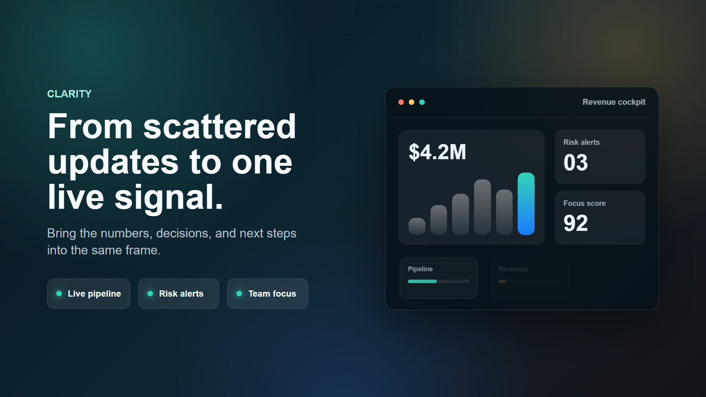

脚本拆解
将口播文案转成镜头、花字、字幕、音效和音乐占位，形成可确认的制作方案。
当前项目
仓库里已经包含素材下载、旁白测试、Remotion 产品片、剪映草稿构建脚本，以及“高维的你正在提醒你”这类叙事项目的制作计划。这个网站把它们整理成一眼能看懂的 demo。

Workflow
将口播文案转成镜头、花字、字幕、音效和音乐占位，形成可确认的制作方案。
按主题搜索并整理 Coverr、Pexels、Pixabay 等视频素材，保留路径和时长信息。
用 Remotion 预览和渲染成片，同时支持 TTS 旁白、字幕图层与视觉包装。
构建 Jianying/CapCut 草稿，让最终项目能继续人工审片、微调和发布。
Assets
适合情绪铺垫、开场和转场。
竖屏叙事素材。

可用于封面和背景。
Delivery
当前项目不仅能给出预览视频，也保留了生成脚本、音频文件、制作计划和草稿注册逻辑，适合继续扩展成标准化的视频生产 demo 或内部工具首页。